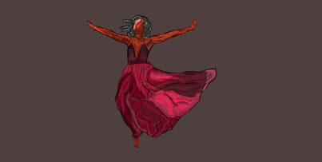
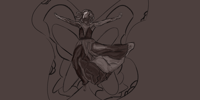
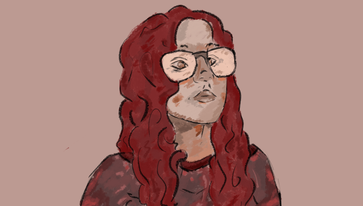
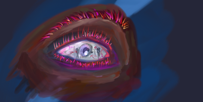
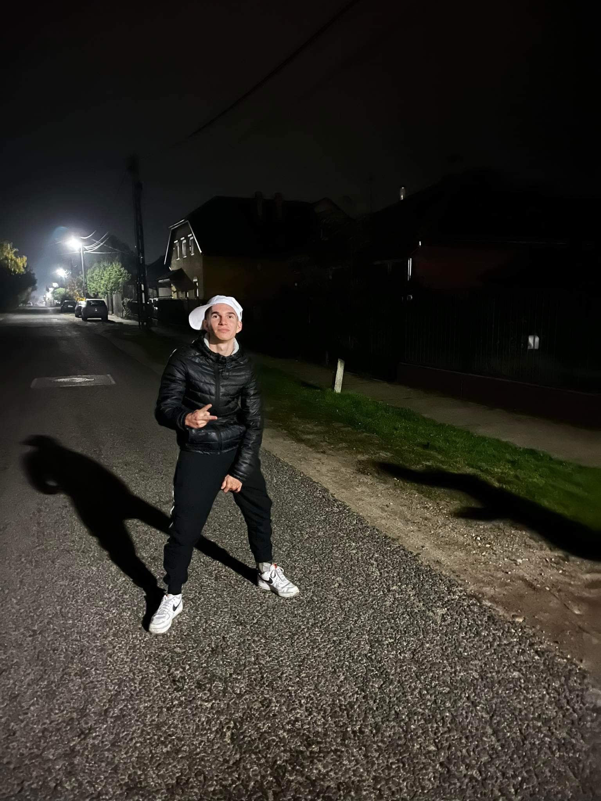
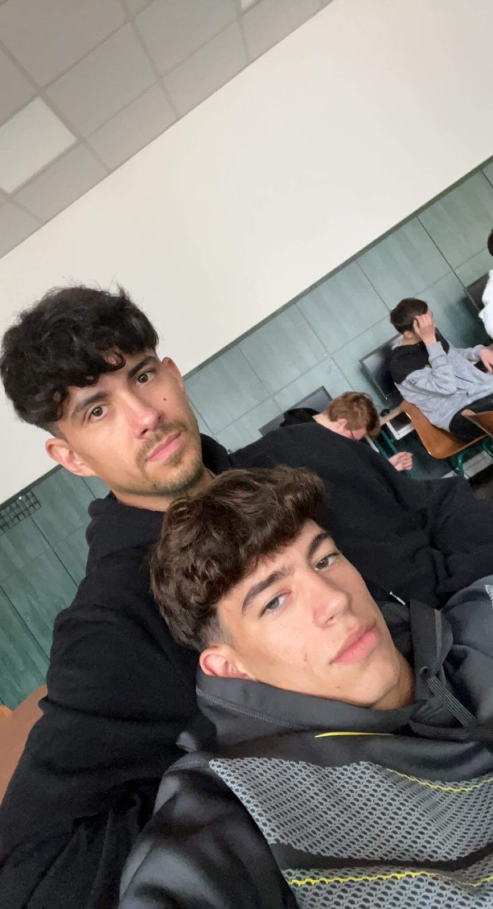
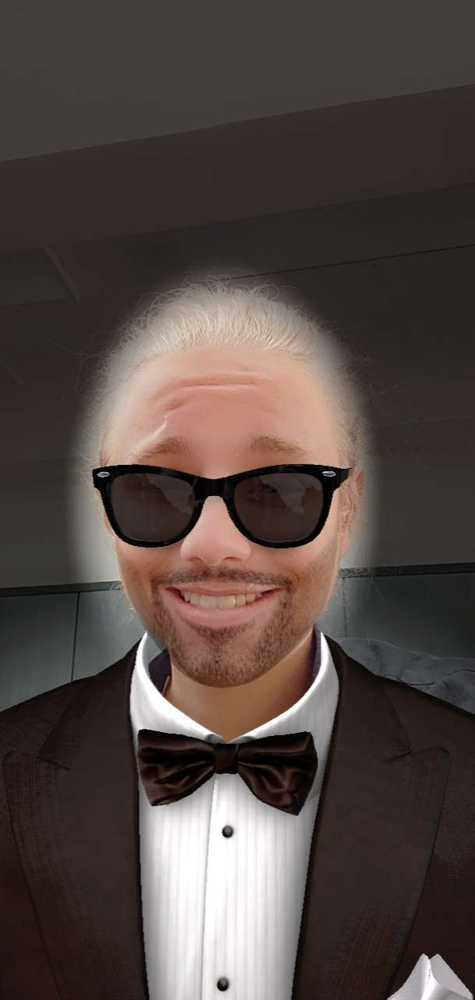

Az Ősz 12.C
Az Ősz
Az ősz a mérsékelt öv egyik évszaka. Trópusi, illetve száraz és hideg égövi tájakon nem létezik. A Föld északi féltekéjén szeptember, október és november, míg a Föld déli féltekéjén március, április és május az ősz hónapjai. Az ősz a nyár és a tél között helyezkedik el, fő jellemzője a napok rövidülése, a hőmérséklet csökkenése és a lombhullató fák lombjának zöldről sárgává-pirossá színeződése majd lehullása. Hagyományosan a legtöbb országban ősszel nyitnak az iskolák, indul a tanítás. Ősz a termények betakarításának, a szőlő szüretelésének ideje is. Az ősz fő ünnepei az elmúláshoz kapcsolódnak: november 1. előestéje az angolszász országokban Halloween, november 1. Mindenszentek és november 2. Halottak napja.Az ősz fő, hagyományokon alapuló ünnepei többnyire az elmúláshoz, halálhoz kapcsolódnak. Ilyen az angolszász országokban nagy hagyományokkal rendelkező (de újabban más kultúrájú népekhez is átszivárgó) Halloween, melyet október 31-én este tartanak meg. Másnap, november 1-jén Mindenszentek, a következő napon, november 2-án Halottak napját tartanak több országban. Az ősz, főként a költészetben, a melankóliával áll asszociatív viszonyban. A szép nyári napok elmúltak, a tél hidege már érződik, az égbolt elszürkül, egyre rövidebbek a nappalok, sok ember magába fordul. A népi eredetű ünnepek közül a termények betakarításához, a szürethez kapcsolódnak helyi ünnepek (például szüreti felvonulások) és népszokások. Ehhez tartozik az amerikai Hálaadás ünnepe, a zsidó szukkót ünnepnap, vagy a kínai őszközépünnep. A déli féltekén őszre esik húsvét. Ősszel, mint más évszakokban különböző országok saját történelmük szerinti politikai ünnepnapokat is tartanak, így Magyarországon október 6-a az Aradi vértanúk emléknapja, nemzeti gyásznap; míg október 23-a nemzeti ünnep, melyen az 1956-os forradalom emlékére. Nemzetközileg megtartott emléknapok közül említésre méltó szeptember 1, a második világháború kezdetének emléknapja. Ősszel nagy fontosságú témákra hívják fel a figyelmet a világnapok, a teljesség igénye nélkül: Európai autómentes nap szeptember 22-én, Európai Örökségnapok, általában szeptember 3. hétvégéjén; november utolsó péntekjén Ne vásárolj semmit! nap, mely a fogyasztói társadalom ellentmondásaira akarja felhívni a figyelmet egy nappal a Hálaadás Amerikában megült ünnepe után.
Ezt a szöveget itt találhatjátok meg.
Versek
Osvát Erzsébet: Jött őszanyó hideg téllel


Jött őszanyó
hideg széllel,
aranysárga
vízfestékkel,
sárgák lettek
a levelek,
fújtak, fújtak
őszi szelek.
Fújtak, fújtak
őszi szelek,
lehullottak
a levelek.
Ott vannak
a fák alatt.
Látod a sok
aranyat
Ezt a szöveget itt találhatjátok meg.
Weöres Sándor: Őszi éjjel izzik a galagonya


Őszi éjjel
izzik a galagonya
izzik a galagonya
ruhája.
Zúg a tüske
szél szalad ide-oda,
reszket a galagonya
magába.
Hogyha a Hold rá
fátylat ereszt:
lánnyá válik,
sírni kezd.
Őszi éjjel
izzik a galagonya
izzik a galagonya ruhája.
Ezt a szöveget itt találhatjátok meg.

{kind=link}
{kind=link}
{kind=link}
{kind=link}
{kind=link}
{kind=link}
{kind=link}
{kind=link}
{kind=link}
{kind=link}
{kind=link}
{kind=link}
{kind=link}
{kind=link}
{kind=link}
Csapattagok

{kind=link}
Györkös Levente - 12.C tanuló
- Mindig itt mikor szükség van rá a csapatnak
- Délegyházi lakos (ott élek)
- Magasság: 168 cm
- testsúly: 23 kg (vagy nem tudom nem vagyok én matek)
- Tajszám: 21324463
{kind=link}

{kind=link}
Kardos Richárd - 12.C tanuló
- Balról az első (on picture)
- Csepeli lakos (nem ott élek) (csak bejelentve)
- kölönleges képesség 10 percre lakik mégis mindig(állandóan) késik
- Magasság: 2 levi
- testsúly: 80 kg
- Tajszám: °˛`˙°^ˇˇ~~

{kind=link}
Lopatovszki Titán - 12.C tanuló
- Szigethalmi Maffia
- Vezér
- Magasság: 180-nak hazudja magát de igazából alig üti a meg a levi szintet
- testsúly: sok (dagat)
- Tajszám: nics